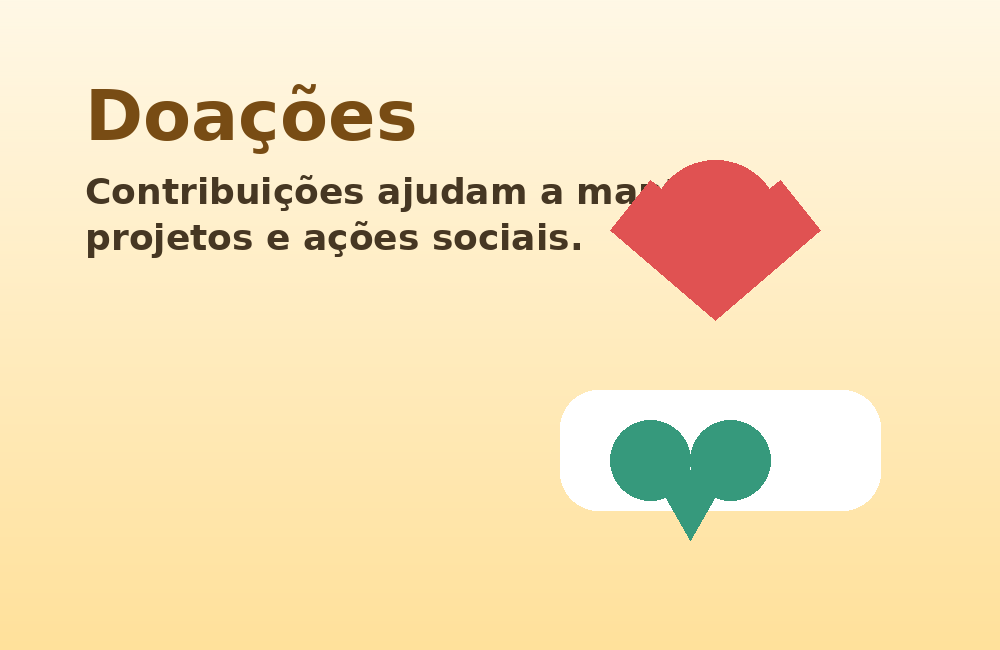

Educação
Apoio em oficinas de leitura, tecnologia e reforço escolar.
Conheça as principais frentes de atuação e escolha como contribuir.
As contribuições ajudam a manter oficinas, campanhas de arrecadação e ações de apoio às famílias atendidas.

Voluntários podem apoiar atividades educativas, organização de eventos, atendimento ao público e campanhas de arrecadação.
Apoio em oficinas de leitura, tecnologia e reforço escolar.
Organização de doações, triagem de materiais e logística.
Produção de conteúdo, divulgação de ações e mobilização digital.
Você pode colaborar com doações, trabalho voluntário, divulgação das campanhas ou participação em eventos. Para demonstrar interesse, preencha o formulário de cadastro.
Acessar cadastro